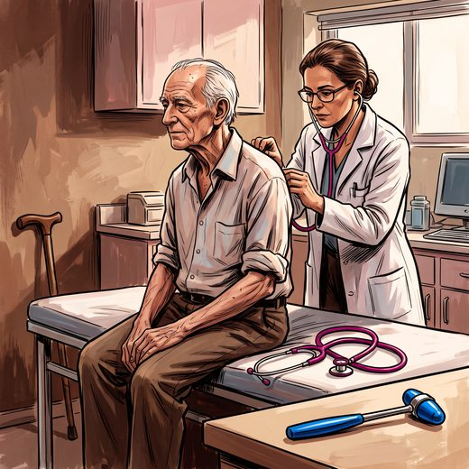

Ferramenta desta aula
Hipotensão ortostática. Roda no navegador, sem cadastro.
Consulta rápida à beira do leito
Condutas, doses e interações.
Referências da aula · 8
- Podsiadlo D, Richardson S. The timed “Up & Go”: a test of basic functional mobility for frail elderly persons. J Am Geriatr Soc. 1991;39(2):142-8. PMID 1991946.PubMed
- Guralnik JM, Simonsick EM, Ferrucci L, et al. A short physical performance battery assessing lower extremity function: association with self-reported disability and prediction of mortality and nursing home admission. J Gerontol. 1994;49(2):M85-94. PMID 8126356.PubMed
- Freeman R, Wieling W, Axelrod FB, et al. Consensus statement on the definition of orthostatic hypotension, neurally mediated syncope and the postural tachycardia syndrome. Clin Auton Res. 2011;21(2):69-72. PMID 21431947.PubMed
- Montero-Odasso M, van der Velde N, Martin FC, et al. World guidelines for falls prevention and management for older adults: a global initiative. Age Ageing. 2022;51(9):afac205. PMID 36178003. doi:10.1093/ageing/afac205.PubMedDOI
- Cruz-Jentoft AJ, Bahat G, Bauer J, et al. Sarcopenia: revised European consensus on definition and diagnosis (EWGSOP2). Age Ageing. 2019;48(1):16-31. PMID 30312372. doi:10.1093/ageing/afy169.PubMedDOI
- Inouye SK, Studenski S, Tinetti ME, Kuchel GA. Geriatric syndromes: clinical, research, and policy implications of a core geriatric concept. J Am Geriatr Soc. 2007;55(5):780-91. PMID 17493201. doi:10.1111/j.1532-5415.2007.01156.x.PubMedDOI
- Katz S, Ford AB, Moskowitz RW, Jackson BA, Jaffe MW. Studies of illness in the aged. The index of ADL: a standardized measure of biological and psychosocial function. JAMA. 1963;185:914-9. PMID 14044222.PubMed
- Freitas EV, Py L, organizadores. Tratado de Geriatria e Gerontologia. 5ª ed. Rio de Janeiro: Guanabara Koogan; 2022.
Documentos oficiais
Leis e publicações do Ministério da Saúde sobre o cuidado da pessoa idosa, de acesso livre.
Abrir os documentos